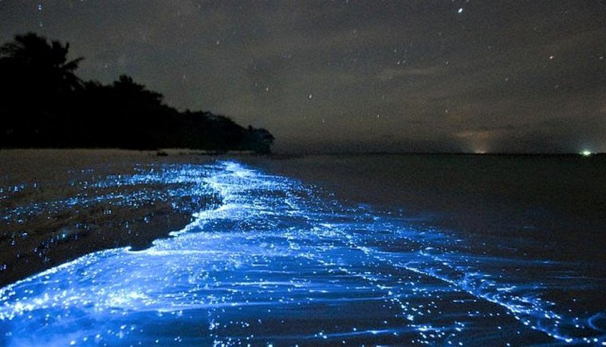
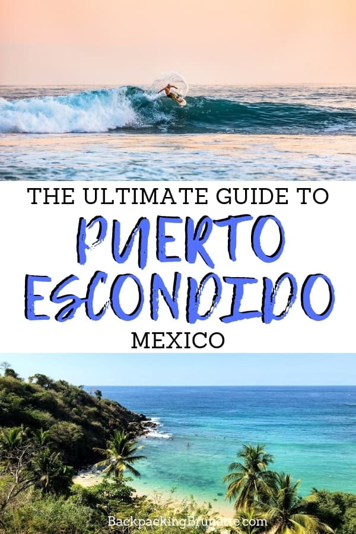
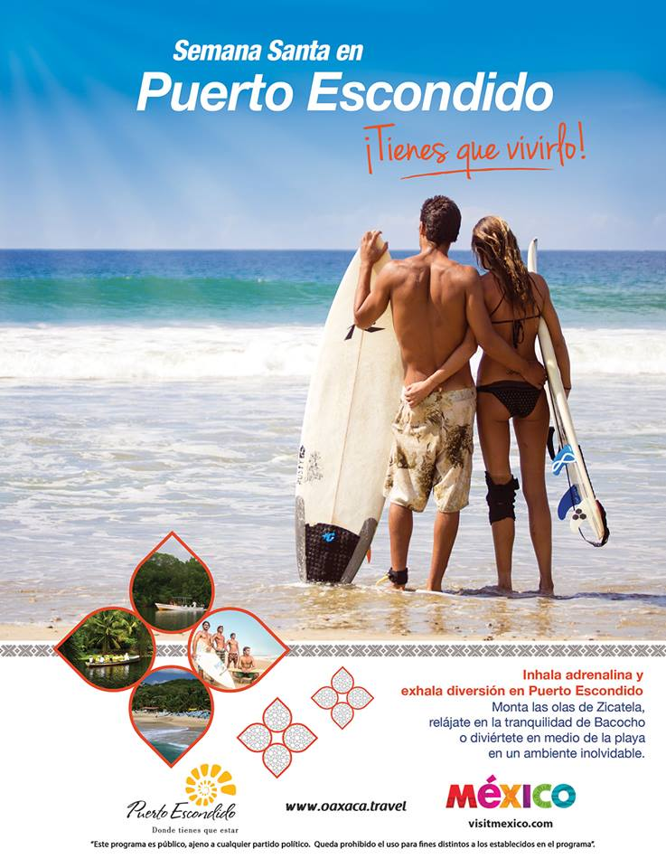

6. Ver la anidación y liberación de tortugas en playa la Escobilla
De junio a septiembre, llegan miles de tortugas a desovar en la playa y de agosto a diciembre
las pequeñas crías comienzan a surgir de la arena y hacen su primer recorrido hacia el mar. La visita a esta playa, la contratación de guías locales,
el consumo en el restaurante local o alojarse en las cabañas disponibles, contribuye a la conservación de la tortuga.
7. Visita la laguna de Manialtepec y experimenta la Bioluminiscencia Es un lugar con una biodiversidad impresionante que surge de la unión de tres ecosistemas
acuáticos distintos. El del Océano Pacífico con su agua salada, el río Minialtepec y el agua de la laguna del mismo nombre. En este increíble ecosistema
conviven alrededor de 300 especies de aves tropicales y animales, como las nutrias y jaguarundis, aves tropicales de laguna como garzas, ibis y garcetas y
especies exóticas como el loro de frente blanca, la garza tigre mexicana y la espátula rosada.
5. Surf en Puerto Escondido El Surf está presente en la mayoría de las playas de Puerto Escondido y ha tenido una influencia importante en
los jóvenes y comunidad local.

| Es sin duda la playa más recomendada a nivel mundial para la práctica del surf. Su bello andador acaba de ser construido y le permitirá disfrutar ya sea de dia o de noche de esta playa. | |
| Es una playa a mar abierto, de gran longitud y con un ancho de varia aproximadamente de 30 a 40 metros. La arena es fina de color gris y pendiente fuerte: el agua templada, cristalina y de tonalidades verdes y azules. El oleaje, en ocaciones, alcanza hasta los 6 metros de altura, ideal para la práctica del surfing. | |
| Localización Se puede llegar a esta playa ubicada al sureste de la población, partiendo del Andador Pérez Gasga, dirigiéndose a la carretera costera hacia Puerto Angel. 500 metros (1640.41 pies) adelante desciese a la derecha y 200 metros (656.16 pies) más adelante enccontrará la playa. |
También se puede llegar caminando por toda la orilla de la playa siguiendo hacia el sureste. |
|  | |
|  |